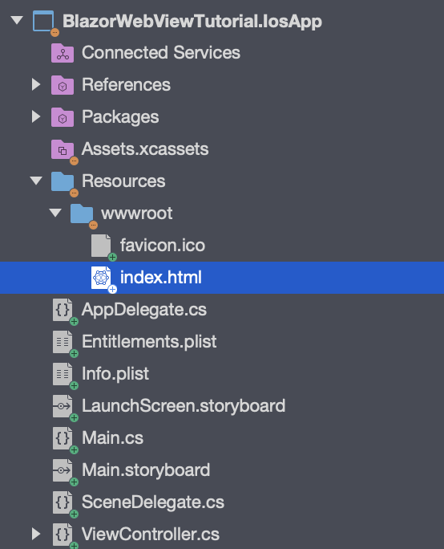
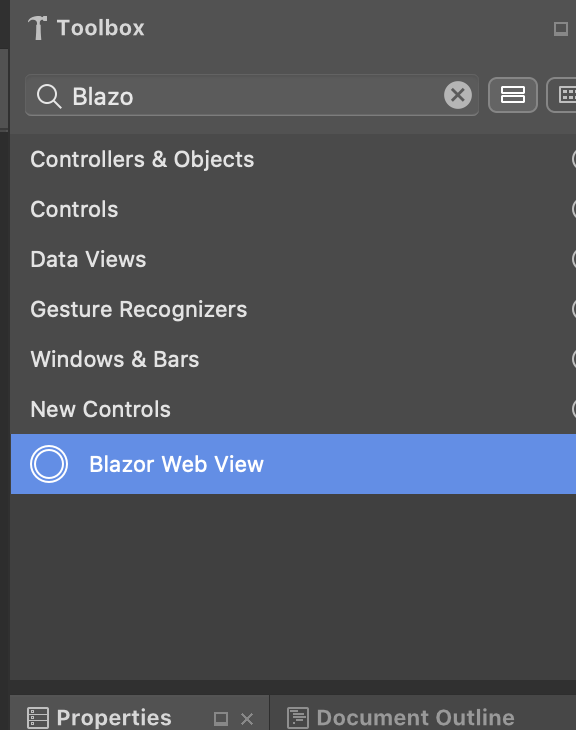
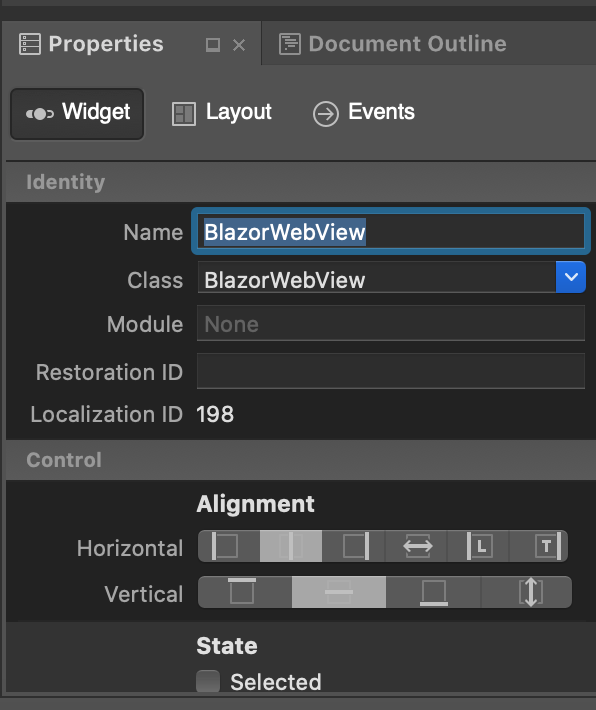
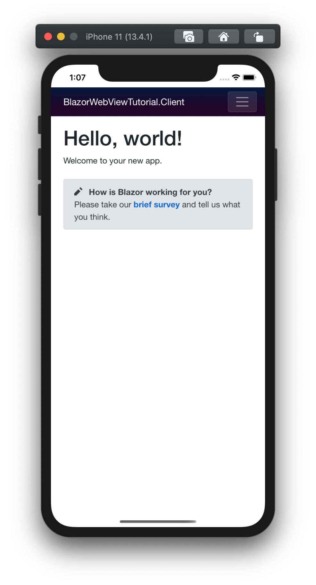

BlazorWebView iOS Tutorial.
We will base our iOS App on the preparations we have done before. The preparations involved bringing over our Blazor App into a Razor Class Library (RCL). This way we can share all of the application code between all the native apps we are creating in these tutorials. The code for the start can be found in this branch.
Add a Xamarin iOS Project.
Let's start by adding a Xamarin iOS Project to the solution. Perform the following
steps to add a new iOS Project to the solution. Right click on the solution node in
the Solution Explorer and select Add -> New project.... This will open the following
dialogs:
Make sure you choose the Single View iOS App Template and not the Multiplatform Xamarin Forms iOS Template for this tutorial. Enter all other details as indicated. A new project will be added to the solution. Set the iOS Project as the startup project and Press Cmd+Enter to start the iOS Simulator and make sure everything works before we start adding the Blazor bits to the iOS Project. You can keep the Simulator running, it is a lot faster to debug this way if neccessary.
It is possible to use native view in a Xamarin Forms app. It is however outside of the scope of this tutorial. More information can be found in the xamarin documentation
Add References.
We start by adding a reference to the Shared project from the iOS Project. Click
right on the references node of the iOS Project and select Add reference....
Select the shared RCL Project from the projects list and click "OK".
Now that we have references the Shared RCL Project, it's time to install the NuGet
package for the BlazorWebView for iOS. Select the project in the Solution Explorer,
and subsequently click Project in the top menu and then Manage NuGet Packages...
Check Show pre-release packages and search for BlazorWebView.iOS'. Add it to the project. This should install the package. We need anHttpClientfor this platform, so we installSystem.Net.Http` from NuGet as well.
Optionally you can update the Xamarin.Essentials NuGet package in the project, because the default template comes with a very old version. Rebuild the project, there should be no build errors.
There are a number of build warnings however, warning MSB3277: Found conflicts between different versions of "System.Numerics.Vectors" that could not be resolved. This is because of the incompatibility of
System.Text.Jsonon Xamarin platforms. Two bugs are tracked here and here. The use of the Serializer luckily is limited enough that Blazor works on iOS. You are encouraged to use Newtonsoft JSON for now if you want to do serialization for HTTP calls and you experience issues.
Lets continue to the next step.
Copy wwwroot Files.
We need a wwwroot folder and an index.html for this project as well. Let's copy the wwwroot
folder from the WebAssembly client project to the iOS project to the Resources folder. Use alt to copy the folder, it will display a plus-symbol. The project should look like this:

The wwwroot folder from the iOS Project will be combined with the Static Assets of the Razor Class Libraries into a folder inside the App-Bundle.
Change index.html.
We need to change the name and location where the framework script is loaded from.
BlazorWebView will intercept URLs loaded from the framework:// scheme and present the
content directly to the native operating webview. We will load the Blazor JavaScript
file from the following location:
framework://blazor.desktop.js
Change the index.html file inside the wwwroot folder of the iOS Project to read:
<!DOCTYPE html>
<html>
<head>
<meta charset="utf-8" />
<meta name="viewport" content="width=device-width, initial-scale=1.0, maximum-scale=1.0, user-scalable=no" />
<title>BlazorWebViewTutorial.Client</title>
<base href="/" />
<!-- Add _content/BlazorWebViewTutorial.Shared below -->
<link href="_content/BlazorWebViewTutorial.Shared/css/bootstrap/bootstrap.min.css" rel="stylesheet" />
<link href="_content/BlazorWebViewTutorial.Shared/css/site.css" rel="stylesheet" />
</head>
<body>
<app>Loading...</app>
<div id="blazor-error-ui">
An unhandled error has occurred.
<a href="" class="reload">Reload</a>
<a class="dismiss">🗙</a>
</div>
<!-- change the script location -->
<script src="framework://blazor.desktop.js"></script>
</body>
</html>
Prepare the Main Storyboard and View Controller.
The iOS App has a single View Controller that is called ViewController. It consists of two parts:
- A Storyboard file called "Main.storyboard" inside the root folder of the iOS App project.
- The "ViewController.cs" file in the same root folder.
We need to update the first to add the Blazor Web View to the Storyboard, then we update the second one to wire up the Blazor Web View to show our Blazor App.
Add the BlazorWebView Control.
Open the "Main.storyboard" file by double clicking it. We need to add a Blazor Web View to the view inside, where the Blazor content will be rendered. Search for the Blazor Web View inside the toolbox and drag it to add it to the view:

The Blazor Web View will appear in the middle of the View. Center align and fill the View using the dialog below:

Make sure you click all the Auto Size edges and inside to make sure that the View sizes with its parent. Finally give the Blazor Web View the name "BlazorWebView" using the Properties dialog below:

We have added a View with the type BlazorWebView.iOS.BlazorWebView, that matches
its parent in height and width, and we have given it the BlazorWebView Name. We will need
that Name later to reference the View in the ViewController.cs file.
Close the Designer and build the project, it should still build. The Designer will have created
a BlazorWebView Outlet inside the ViewController.Designer.cs file.
Wire up the Blazor Web View.
Open the ViewController.cs file in the Text Editor. First we need to add two namespaces
inside the namespace of the file (to avoid naming conflicts) like so:
namespace BlazorWebViewTutorial.IosApp
{
// add usings here
using BlazorWebView.iOS;
using BlazorWebView;
To be able to dispose of the BlazorWebViewHost we add a private field to the class:
public partial class ViewController : UIViewController
{
private IDisposable disposable;
Now, we are ready to use the BlazorWebView Outlet to initialize Blazor.
We do this by adding the following statement to the ViewDidLoad method of the class:
// run blazor.
this.disposable = BlazorWebViewHost.Run<Startup>(this.BlazorWebView, "wwwroot/index.html");
The line will start Blazor. We'll take it apart step by step, to see what is going on:
- The result of the assignment is a Disposable instance that can be used to tear down and cleanup blazor. We should save it and call dispose when the View is unloaded.
- We start Blazor by calling the Run method on the
BlazorWebViewHoststatic class. The run method takes a Generic type that specifies the Startup class that will initialize Blazor. We still use a Startup class, although Blazor WebAssembly has moved away from it. This might change in the future, but for now we keep the Startup class. We will define a Startup class in the next chapter. - The first argument to the run method is the
IBlazorWebViewinstance for the platform that we will use. In this case, it's the BlazorWebView instance that we got from the Outlet. - The second argument is the relative path to the
index.htmlresource inside the project. It usually is index.html and it has to be thewwwrootfolder. The wwwroot folder is copied from the Resources folder to the Bundle on build.
We have to make sure that we clean up nicely when the Parent View is destroyed, so we add the following line to the DidReceiveMemoryWarning method inside the ViewController.cs file:
class:
public override void DidReceiveMemoryWarning()
{
if (this.disposable != null)
{
this.disposable.Dispose();
this.disposable = null;
}
base.DidReceiveMemoryWarning();
}
After we have done this the final version of the ViewController.cs should look like this:
using Foundation;
using System;
using UIKit;
namespace BlazorWebViewTutorial.IosApp
{
// add usings here
using BlazorWebView.iOS;
using BlazorWebView;
public partial class ViewController : UIViewController
{
private IDisposable disposable;
public ViewController(IntPtr handle) : base(handle)
{
}
public override void ViewDidLoad()
{
base.ViewDidLoad();
// run blazor.
this.disposable = BlazorWebViewHost.Run<Startup>(this.BlazorWebView, "wwwroot/index.html");
}
public override void DidReceiveMemoryWarning()
{
if (this.disposable != null)
{
this.disposable.Dispose();
this.disposable = null;
}
base.DidReceiveMemoryWarning();
}
}
}
Well done, you've implemented the ViewController, so we can move on to the final bit of this tutorial, which
is implementing the Startup class.
Implement the Startup Class.
We have to wire up the Blazor Dependency Injection and define the root App class for Blazor to be able to run. This Startup class closely resembles the AspnetCore default startup class for a web application. We could define it in the Shared RCL Project, but as it most likely will contain DI registrations specific to the platform, a better place is the iOS Project. Let's add the following class to the iOS Project:
using System.Net.Http;
using BlazorWebView;
using BlazorWebViewTutorial.Shared;
using Microsoft.Extensions.DependencyInjection;
namespace BlazorWebViewTutorial.IosApp
{
public class Startup
{
public void ConfigureServices(IServiceCollection services)
{
services.AddScoped<HttpClient>();
}
/// <summary>
/// Configure the app.
/// </summary>
/// <param name="app">The application builder for apps.</param>
public void Configure(ApplicationBuilder app)
{
app.AddComponent<App>("app");
}
}
}
The startup class has two methods. The first method configures the services
for the DI container. We add an HttpClient from System.Net.Http as the
iOS Platform does not come with a built-in one.
The second method is the configuration for the platform. The method accepts
an ApplicationBuilder that can be used to add the root component for the
app.
Press Cmd+Enter to build and run the project. You should be greeted by a familiar Blazor application:

Fix the Last Runtime Issue.
When you navigate to the Fetch-Data Page, you'll notice that the data is no
longer shown. The data is included inside the iOS APK, but the HttpClient
that we have added to the DI container is outside of the Browser and won't be
intercepted by the BlazorWebView. Let's get the data from Github directly
to solve this issue. Change the Oninitialized method inside FetchData.Razor
component in the shared RCL project to read:
protected override async Task OnInitializedAsync()
{
forecasts = await Http.GetFromJsonAsync<WeatherForecast[]>("https://raw.githack.com/jspuij/BlazorWebViewTutorial/master/BlazorWebViewTutorial.Shared/wwwroot/sample-data/weather.json");
}
The iOS App should now be fully functioning. The source for the iOS App is in this branch: